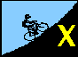
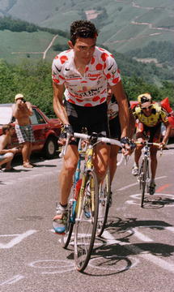

<html><head>

<!-- base href="weekX.html" --><title>No-Key HillClimbs Week X</title>


<!-- base href="weekX.html" --></head><body background="weekX.html">

<div align="center">
|
<a href="index.html">
Index
</a>
|
<a href="week1.html">
Week1
</a>
|
<a href="week2.html">
Week2
</a>
|
<a href="week3.html">
Week3
</a>
|
<a href="week4.html">
Week4
</a>
|
<a href="week5.html">
Week5
</a>
|
<br>
|
<a href="week6.html">
Week6
</a>
|
<a href="week7.html">
Week7
</a>
|
<a href="week8.html">
Week8
</a>
|
<a href="week9.html">
Week9
</a>
|
<a href="weekX.html">
X
</a>
|
<a href="overall.html">
Overall
</a>
|
<br>
</div>
<p>
</p><h4>

No-Key HillClimb:<br>
Week X - Old La Honda Road (E) ; 07 Dec 1996<br clear="left">
</h4>

<hr>
<p>
<a href="resultX.html">Results</a>
</p>
<p>
<table border="5" width="100%">
<tbody _base_href="weekX.html"><tr>
<td>
<font size="5"><b><em>A Remarkable Coincidence...</em></b></font>
<p>
At 10:30, 32 cyclists coincidently began simultaneously climbing Old La Honda,
a public road in Woodside.  Meanwhile, from his car at the head of this crowd,
Low-Key Ironman John Alafouzos coincidently started his timer, which he coincidently
consulted each time one of these cyclists reached the stop sign at the summit (after
making a full legal stop, of course, <em>wink, wink, nudge, nudge</em>...).
</p>
<p>
And so this crowd of mostly Low-Key series regulars staved of withdrawel for one
extra week by riding this ultra-classic benchmark of climbs -- Old La Honda Road.
And the heavens approved, as the clouds which had been soaking the landscape the
past several days, and were expected to continue in the days to come, parted to
yield warming sunshine to the riders at the start.  The 10-15 knot southern winds
had varying effect as the route meandered up the side of the ridge, but otherwise
conditions were virtually perfect for climbing.
</p>
<p>
At the start, Tracy ``<em>Terminator</em>'' Colwell went out fast.  On his wheel,
perhaps thinking they had gained 10-20% in their lactate thresholds since Hicks,
were Mike Podgorski (TnT) and Richard Herms (Adventure), with a large crowd not far
behind them.  Tracy, however, soon assumed his usual state of silitude at the front,
reaching the top in 16:00, perhaps regretting the seconds which could have been saved
had he let the sag vehicle take his waterbottle, tools, and spare tube, seconds which
would have placed him in the exclusive sub-16 club.  Mike spun his 26 and 28 cogs
to salvage third place with an excellent sub-18 time, despite fading during the last
mile.  Rich came in 1:37 after for sixth place.
</p>
<p>
Meanwhile, among the women, Team Colwell's Julie Colwell pulled out all
the stops to achieve her first victory of the series and produce a
Team Colwell sweep for the day.  AV's Phyllis Olrich continued her steady improvement
over the Low-Key series with a strong second place.  Soon later,
Adventure's Cheryl Herms, first among
the women at last week's Mount Hamilton climb, reached the summit for third.
</p><p>
While only Colwells were first, the mood at the summit was of victory for all, as the
beautiful day, clear air, and just-completed brisk climb was worth savoring.
Many will meet again in Brisbane on the New Year for Pen Velo's
<a href="SanBruno1997.html">Mt. San Bruno Hillclimb</a>,
where despite belonging to different clubs, all Low-Key Hillclimbers
will be teammates, at least in spirit.
</p>
<p>
Thanks again to Pat and John and Phyllis for their help with this non-event.
</p>
<p>
<a href="resultX.html"><font size="5"><em><b>Results are in!!!</b></em></font></a>
</p>
</td>
</tr>
</tbody></table>
</p>

<p>
</p><h2>Overview</h2>
If you wish that Bay Area benchmark and ultra-classic,
<a href="../1995/results_week04.html">Old La Honda Road (E)</a>,
was on the
1996 Low-Key schedule, here's your chance!  Those interested are encouraged to
meet at the base of Old La Honda (near Portola Valley Road in Woodside) for
an informal, potentially self-timed ``No-Key'' Hillclimb from the bridge
to the stop sign at the top.  No fee, no prizes, no points...
We'll type the results and post them to this site soon after the climb,
however.  ``Registration'' will be at 10am for a 10:30 mass-start.
<p></p>
<p>
Thanks to  <a href="mailto:Pattb27@aol.com">Patt Baenen</a> for volunteering
to help with registration!  And, thanks to Low-Key Ironman and friend
<a href="mailto:JALAFOUZ@raychem.com">John Alafouzos</a> for
timing and sagging!  Finally, thanks to 
<a href="mailto:PhyllisO@Forsythe.Stanford.EDU">Phillis Olrich</a>
for volunteering to be Data Entry Specialist!
</p>
<br clear="all">
<hr>
<h2>The Details</h2>
<table border="1">
<tbody _base_href="weekX.html"><tr>
<td><em>Distance</em>:</td>
<td>3.3 miles</td>
</tr>
<tr>
<td><em>Climbing</em>:</td>
<td>1300 feet</td>
</tr>
<tr>
<td><em>Format</em>:</td><td>mass start</td>
</tr>
<tr>
<td><em>Start</em>:</td>
<td>
Bridge near base of Old La Honda Road (intersection with Portola Valley
Road) in Woodside.
</td>
</tr>
<tr><td><em>Parking</em>:</td>
<td>
Not at the start, please.  Parking is available in Woodside on Hwy
84 at the Woodside School.
</td>
</tr>
<tr>
<td><em>Directions</em>:</td>
<td><a href="http://maps.yahoo.com/yt.hm?CMD=MAP&amp;FAM=yahoo&amp;SEC=geo&amp;MA=1&amp;GC=X:-122.25927%7CY:37.42478%7CLT:37.3953%7CLN:-122.24629%7CLS:29000%7Cc:Woodside%7Cs:CA&amp;IC=37.42478:-122.25927:555:&amp;GAD3=Woodside%2c+CA&amp;W=400&amp;H=250&amp;ZM=.5">Check out the interactive Yahoo map!</a></td>
</tr>
<tr>
<td><em>Finish</em>:</td>
<td>stop sign 5 meters from intersection with Skyline Blvd</td>
</tr>
<tr>
<td><em>Reg Time</em>:</td><td>10:00 am to 10:20 am</td>
</tr>
<tr>
<td><em>Start Time</em>:</td><td>10:30 am</td>
</tr>
<tr>
<td><em>Fee</em>:</td><td>nada</td>
</tr>
<tr>
<td><em><a href="http://www.webville.com/oak/ww/weather.html">Weather</a></em>:
</td>
<td>
60F, 10-15 knot wind from the south, partly cloudy skies, road wet in places... an excellent day for a hillclimb!!!
</td>
</tr>
<tr>
<td><em>Map</em>:</td>
<td align="center"><a href="http://lowkeyhillclimbs.com/1996/mapX.png"></a></td>
</tr>
</tbody></table>
<p></p>
<hr>
<p>
</p><address><a href="mailto:djconnel@flash.net">djconnel@flash.net</a></address>
<p></p>


</body></html>